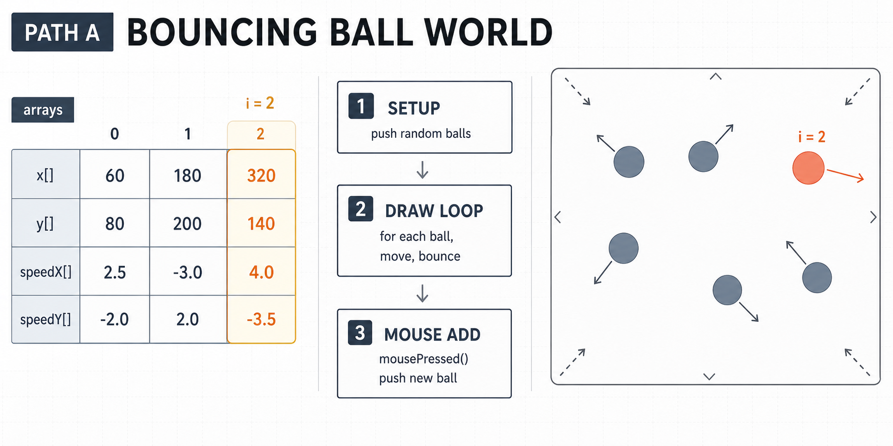
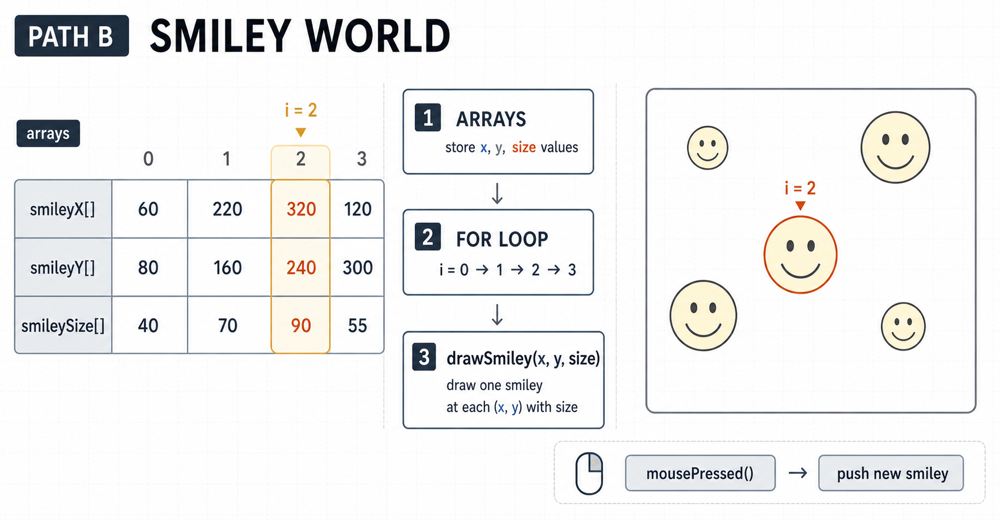

6주차 3교시 — 학생 주도 실습: 함수와 배열로 다중 오브젝트
강의 아웃라인: week-06-outline 이전 교시: week-06-period2-student (배열: 데이터를 한꺼번에 관리하자) 다음 주차: week-07-outline (클래스와 객체)
| 항목 | 내용 |
|---|---|
| 대상 | P5.js 입문자 (테크아트 전공) |
| 소요 시간 | 45분 |
| 사전 준비 | 1교시 사용자 정의 함수, 2교시 배열·반복문 |
| 결과물 | 함수·배열 기반 다중 오브젝트 스케치 1점 (7주차 클래스의 밑바탕) |
- 사용자 정의 함수와 배열을 결합해 다수 오브젝트가 움직이는 인터랙티브 스케치를 제작합니다
-
draw()안의 코드를 함수로 분리하는 리팩토링을 직접 수행합니다 -
push()와mousePressed()로 인터랙티브 요소를 추가합니다
완성 기준 안내 + 실습 시작
3교시에서 1-2교시에 배운 함수와 배열을 합쳐 직접 인터랙티브 스케치를 만듭니다. 세 단계 완성 기준을 보고 자신이 어느 단계에 있는지 스스로 판단할 수 있습니다.
완성 기준
| 단계 | 이름 | 완성 기준 | 핵심 |
|---|---|---|---|
| 기본 | 동작하는 다중 오브젝트 | 배열로 오브젝트 여러 개 + for문으로 그리기/이동 + 경계 처리 | “여러 개가 움직인다” |
| 표준 | 함수로 정리된 코드 | 기본 + draw() 안의 코드를 함수로 분리
(moveBalls(), drawBalls() 등) + 인터랙션 1개
(클릭으로 추가 등) |
“코드가 깔끔하고, 반응한다” |
| 심화 | 완성된 작품 | 표준 + 시각 효과 (색상 배열, 잔상, HSB 등) + addBall()
같은 생성 함수 분리 |
“보기 좋고, 구조도 좋다” |
만 해도 오늘 목표 완료입니다. 까지 가면 심화 목표까지 도전한 것입니다. 이 스케치는 연습용으로 제출할 필요는 없지만, 7주차 클래스의 밑바탕이 되니 저장해두세요.
세 가지 방향
세 방향 중 하나를 골라 시작합니다 (자유롭게 섞어도 됩니다).
| 방향 | 설명 | 핵심 기술 | 1-2교시 연결 |
|---|---|---|---|
| A. 바운싱 볼 월드 | 배열로 바운싱 볼 여러 개 + 클릭으로 추가 | 배열, for문, push(), 함수 분리 | 2교시 다중 바운싱 볼 확장 |
| B. 스마일 월드 | drawSmiley() + 배열로 여러 개 배치 |
그리기 함수, 배열, random() | 1교시 drawSmiley() 활용 |
| C. 궤적 아트 | 클릭 위치를 배열에 저장 + 시각 효과 | push(), mousePressed(), 함수 | 새로운 방향 |
선택이 어렵다면 A(바운싱 볼 월드)부터 시작하세요. 2교시에서 이미 코드를 봤으니 가장 익숙합니다.
환경 설정
- P5.js Web Editor 접속 (로그인 확인)
- File → New → 스케치 이름을
week06-function-array로 변경 - 아래 세 방향 중 하나를 골라 스타터 코드를 복사-붙여넣기
스타터 코드
방향 A: 바운싱 볼 월드

let x = [];
let y = [];
let speedX = [];
let speedY = [];
function setup() {
createCanvas(400, 400);
// 시작할 때 공 3개 생성
for (let i = 0; i < 3; i++) {
x.push(random(width));
y.push(random(height));
speedX.push(random(-3, 3));
speedY.push(random(-3, 3));
}
}
function draw() {
background(30);
// TODO: 이 코드를 함수로 분리해보세요!
for (let i = 0; i < x.length; i++) {
fill(255);
ellipse(x[i], y[i], 30, 30);
x[i] += speedX[i];
y[i] += speedY[i];
if (x[i] > width || x[i] < 0) speedX[i] *= -1;
if (y[i] > height || y[i] < 0) speedY[i] *= -1;
}
}
// TODO: mousePressed()로 클릭하면 공 추가하기방향 B: 스마일 월드
1교시에서 만든 drawSmiley() 함수를 배열과 합치면 스마일
여러 개를 한 번에 관리할 수 있습니다.

let smileyX = [];
let smileyY = [];
let smileySize = [];
function setup() {
createCanvas(400, 400);
// 시작할 때 스마일 5개 배치
for (let i = 0; i < 5; i++) {
smileyX.push(random(50, 350));
smileyY.push(random(50, 350));
smileySize.push(random(40, 100));
}
}
function draw() {
background(220);
for (let i = 0; i < smileyX.length; i++) {
drawSmiley(smileyX[i], smileyY[i], smileySize[i]);
}
}
// 1교시에서 만든 스마일 그리기 함수!
function drawSmiley(x, y, size) {
fill(255, 255, 0);
ellipse(x, y, size, size);
fill(0);
ellipse(x - size * 0.15, y - size * 0.1, size * 0.1, size * 0.1);
ellipse(x + size * 0.15, y - size * 0.1, size * 0.1, size * 0.1);
arc(x, y + size * 0.1, size * 0.4, size * 0.2, 0, PI);
}
// TODO: mousePressed()로 클릭하면 스마일 추가하기
// TODO: 스마일이 살짝 흔들리게 만들기방향 C: 궤적 아트
let dotX = [];
let dotY = [];
let dotSize = [];
function setup() {
createCanvas(400, 400);
background(30);
}
function mousePressed() {
dotX.push(mouseX);
dotY.push(mouseY);
dotSize.push(random(10, 40));
}
function draw() {
background(30);
drawDots();
}
// 모든 점 그리기
function drawDots() {
noStroke();
for (let i = 0; i < dotX.length; i++) {
fill(255, 200);
ellipse(dotX[i], dotY[i], dotSize[i], dotSize[i]);
}
}
// TODO: 점에 색상 추가 (색상 배열), 점을 움직이게 만들기실행 버튼()을 눌러보세요. 동작하면 여기서부터 시작합니다.
Step 1 — 스타터 코드 실행 + 실험: 기본 달성
목표
스타터 코드가 동작하는지 확인하고, 숫자를 바꿔보며 배열과 for문의 구조를 체감한다.
이 단계를 마치면 기본 달성!
방향 A 기준
스타터 코드를 실행해 공 3개가 바운싱하는지 확인하고, 코드를 읽어봅니다.
코드 분석 포인트 1. let x = []; — 빈
배열 선언 2. setup()의
for (let i = 0; i < 3; i++) — 3번 반복하면서
push() 3. draw()의
for (let i = 0; i < x.length; i++) — 배열 전체를
순회
이 단계에서 할 것 - 공 개수를 3에서
10으로 바꿔보기
(for (let i = 0; i < 10; i++)) - 공 크기를 30에서 다른
값으로 바꿔보기
힌트 (도움이 필요하면 펼쳐보세요)
setup() 안의 for문에서
i < 3을 i < 10으로 바꾸면 됩니다.
draw()는 수정할 필요 없어요 — x.length가
자동으로 10이 되니까.
방향 B 기준
스타터 코드를 실행해 스마일 5개가 보이는지 확인합니다.
이 단계에서 할 것 - 스마일 개수를 5에서
15로 바꿔보기 - drawSmiley() 함수의 얼굴
색상을 바꿔보기 - 배경색을 바꿔보기
방향 C 기준
스타터 코드를 실행하고 클릭해 점이 생기는지 확인합니다.
이 단계에서 할 것 - 여러 번 클릭해서 점이 계속
추가되는지 확인 - dotSize의 random() 범위를
바꿔보기
Step 2 — 함수로 코드 분리: 표준 달성
목표
draw() 안의 코드를 함수로 분리하고, 인터랙션을
추가한다.
이 단계를 마치면 표준 달성!
방향 A 기준: 함수 분리 + 클릭 인터랙션
draw() 안의 for문을 함수로 분리합니다. 1교시 바운싱 볼
리팩토링의 배열 버전입니다.
목표 draw():
function draw() {
background(30);
moveBalls();
bounceBalls();
drawBalls();
}작성할 함수들:
function moveBalls() {
for (let i = 0; i < x.length; i++) {
x[i] += speedX[i];
y[i] += speedY[i];
}
}
function bounceBalls() {
for (let i = 0; i < x.length; i++) {
if (x[i] > width || x[i] < 0) speedX[i] *= -1;
if (y[i] > height || y[i] < 0) speedY[i] *= -1;
}
}
function drawBalls() {
for (let i = 0; i < x.length; i++) {
fill(255);
noStroke();
ellipse(x[i], y[i], 30, 30);
}
}실행 결과가 전과 동일하면 리팩토링 성공입니다.
그다음: 클릭으로 공 추가
function mousePressed() {
x.push(mouseX);
y.push(mouseY);
speedX.push(random(-4, 4));
speedY.push(random(-4, 4));
}힌트 (도움이 필요하면 펼쳐보세요)
draw()밖에function moveBalls() { }만들기- 이동 관련 코드(
x[i] += speedX[i]등)를 잘라내서moveBalls()안에 붙여넣기 - 같은 방법으로
bounceBalls(),drawBalls()만들기 draw()안에서 세 함수를 순서대로 호출
순서가 중요해요: 이동 → 바운싱 → 그리기. 그리기를 먼저 하면 이동 전 위치가 그려져요.
방향 B 기준: 흔들림 함수 + 클릭 인터랙션
function moveSmileys() {
for (let i = 0; i < smileyX.length; i++) {
smileyX[i] += random(-0.5, 0.5); // 미세한 흔들림
smileyY[i] += random(-0.5, 0.5);
}
}
function mousePressed() {
smileyX.push(mouseX);
smileyY.push(mouseY);
smileySize.push(random(40, 100));
}방향 C 기준: 색상 배열 추가
let dotColor = [];
function mousePressed() {
dotX.push(mouseX);
dotY.push(mouseY);
dotSize.push(random(10, 40));
dotColor.push(color(random(255), random(255), random(255)));
}
function drawDots() {
noStroke();
for (let i = 0; i < dotX.length; i++) {
fill(dotColor[i]);
ellipse(dotX[i], dotY[i], dotSize[i], dotSize[i]);
}
}힌트 (도움이 필요하면 펼쳐보세요)
mousePressed() 함수가 이미 있으면 새로 만들지 말고, 기존
함수 안에 push() 코드를 추가하세요. P5.js에서 같은 이름의
함수가 두 개 있으면 마지막 것만 실행됩니다.
Step 3 — 시각 효과 확장: 심화 달성
목표
색상, 크기, 잔상 등 시각 효과를 추가하고, 생성 로직도 함수로 분리하여 작품을 발전시킨다.
이 단계를 마치면 심화 달성!
addBall() 생성
함수 만들기 (방향 A)
공을 추가하는 코드가 setup()에도
mousePressed()에도 있죠? 이것도 함수로 묶을 수
있습니다.
function addBall(bx, by) {
x.push(bx);
y.push(by);
speedX.push(random(-4, 4));
speedY.push(random(-4, 4));
c.push(color(random(255), random(255), random(255)));
size.push(random(15, 45));
}
// setup()에서:
for (let i = 0; i < 5; i++) {
addBall(random(width), random(height));
}
// mousePressed()에서:
function mousePressed() {
addBall(mouseX, mouseY); // 한 줄!
}공 추가 로직이 addBall() 한 곳에만 있으니, 수정할 때도
한 곳만 고치면 됩니다.
색상 배열 추가 (방향 A)
let c = []; // 색상 배열 추가
// drawBalls() 수정:
function drawBalls() {
noStroke();
for (let i = 0; i < x.length; i++) {
fill(c[i]);
ellipse(x[i], y[i], size[i], size[i]);
}
}잔상 효과 (5주차 복습)
function draw() {
// background(30); 을 아래로 교체
background(30, 30, 30, 40); // 반투명 배경 → 잔상 효과
moveBalls();
bounceBalls();
drawBalls();
}5주차에서 배운 잔상 효과 — 공 뒤에 꼬리가 생깁니다.
HSB 색상 모드 활용 (3주차 복습)
function setup() {
createCanvas(400, 400);
colorMode(HSB, 360, 100, 100);
// ...
}
// 색상 생성 시:
c.push(color(random(360), 80, 100)); // 선명한 랜덤 색상바운스할 때 색 변경
function bounceBalls() {
for (let i = 0; i < x.length; i++) {
if (x[i] > width || x[i] < 0) {
speedX[i] *= -1;
c[i] = color(random(360), 80, 100); // 색 변경!
}
if (y[i] > height || y[i] < 0) {
speedY[i] *= -1;
c[i] = color(random(360), 80, 100);
}
}
}공 개수 표시 / 키보드 인터랙션
function drawInfo() {
fill(255);
noStroke();
textSize(14);
text("공: " + x.length + "개 | 클릭해서 추가 | 'c'로 초기화", 10, 20);
}
function keyPressed() {
if (key === 'c') {
// 모든 공 제거
x = []; y = []; speedX = []; speedY = []; c = []; size = [];
}
}마무리
스케치 저장
스케치를 저장하세요. Ctrl+S (Mac: Cmd+S). P5.js Web Editor에서 저장하면 자동으로 계정에 연결됩니다.
오늘 한 것 돌아보기
| 완성 기준 | 핵심 기술 | 확인 |
|---|---|---|
| 기본 | 배열 + for문으로 여러 오브젝트 움직임 | “내 스케치에 여러 개가 움직이고 있나?” |
| 표준 | 함수 분리 + mousePressed() 인터랙션 | “draw() 안이 함수 호출로 깔끔한가?” |
| 심화 | 색상/잔상/HSB + addBall() 생성 함수 | “시각적으로 완성도 있고, 코드 구조도 좋은가?” |
어디까지 갔든 괜찮습니다. 중요한 건 함수와 배열을 합쳐본 경험입니다.
과제 안내
이번 주는 별도 과제가 없습니다. 실습과제 2(5주차)를 아직 제출하지 않았다면 이번 주 안에 제출하세요. 오늘 만든 스케치는 제출할 필요 없지만, 다음 주 7주차 내용의 밑바탕이 되니 저장해두세요.
다음 주 예고: 클래스와 객체
오늘 배열로 공 여러 개를 만들 때 x[], y[],
speedX[], speedY[], c[],
size[] — 배열 6개가 필요했습니다. 같은
공의 데이터인데 따로따로 관리해야 했죠. 7주차에서
클래스(class)를 배우면 공의 모든 데이터와 동작을
하나로 묶을 수 있습니다.
// 오늘 (배열 6개)
x[i] += speedX[i];
if (x[i] > width) speedX[i] *= -1;
ellipse(x[i], y[i], size[i]);
// 7주차 (클래스)
ball.move();
ball.bounce();
ball.display();ball.move() — ‘공아, 움직여라’. 영어 문장처럼 읽힙니다.
오늘 만든 코드가 다음 주에 훨씬 깔끔하게 진화합니다.
(선택) 사전 학습 영상
다음 주 내용이 궁금하면 미리 봐도 좋습니다.
- The Coding Train “6.2 Classes in JavaScript” (약 15분)
- The Coding Train “7.1 What is an Array?” (약 14분) — 오늘 배운 내용 복습